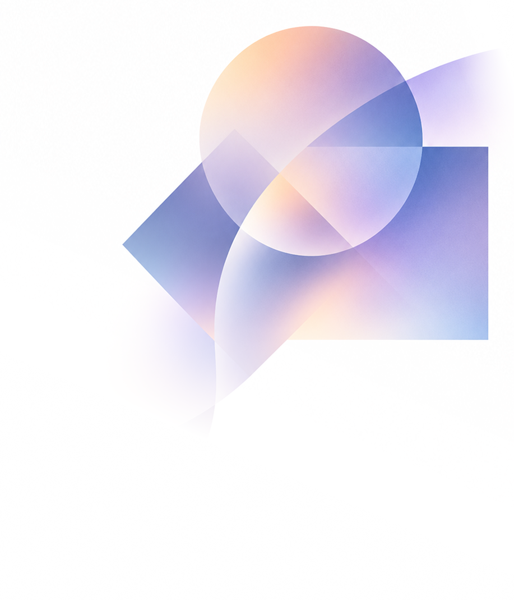

共生迭代．典範移轉
Symbiosis, Evolution & Paradigm Shift
第 32 屆國際設計學術研討會
32nd International Design Symposium
設計關係的重新組構 ——
從以人為中心，走向人、機器與環境
共創的持續演化過程。

會議主題Conference Theme
本次研討會以「共生迭代．典範移轉」為核心主題，探討科技、社會與環境變遷如何促使設計典範重新定位。
「共生」指的是設計關係的重新建構——設計不再預設人是唯一的中心與行動者。
人、機、境三者的關係範疇放大到人以外的其他生物、機械物件、人工智慧，空間環境則是涵蓋了虛擬與現實；而「迭代」指的是設計過程與結果的開放性。
設計不再以一次性的完成或唯一的最佳解為終點，而是在使用、互動、回饋與環境變化中持續調整、學習與演化。兩者共同指向一個更根本的問題：當設計的關係結構發生改變，我們所理解的設計典範是否也正在轉移？